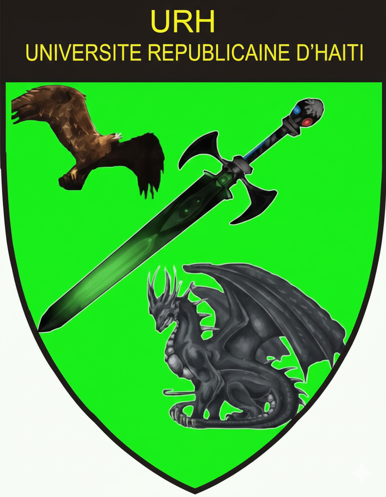
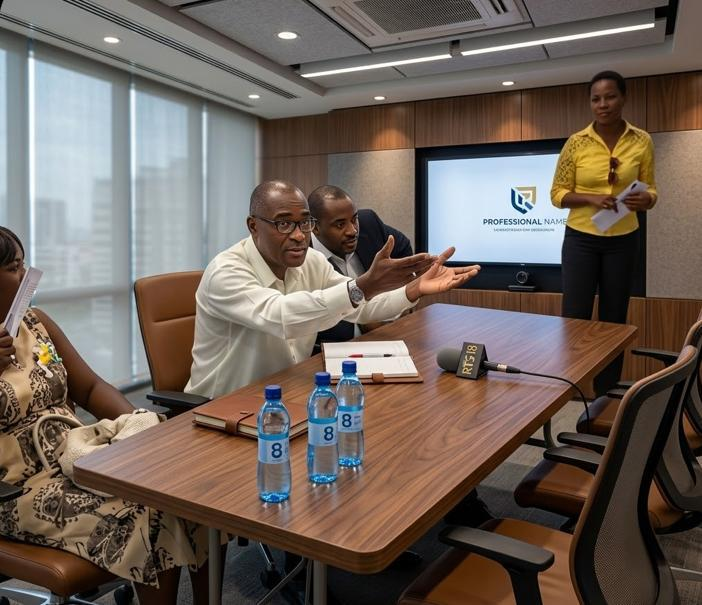
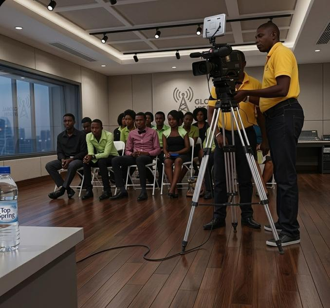
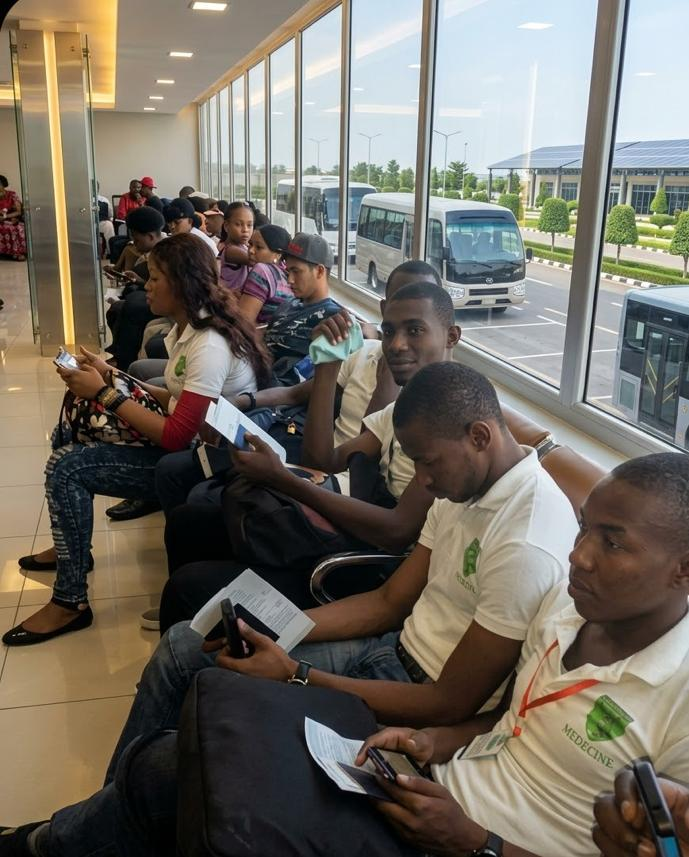

Une universite qui pense loin, agit juste, sert Haiti.
L'URH se definit comme une universite a but non lucratif, ouverte a la jeunesse haitienne, orientee vers l'acces aux etudes superieures et la preparation de parcours utiles au pays.

Vision institutionnelle | mission, valeurs et direction
L'URH se definit comme une universite a but non lucratif, ouverte a la jeunesse haitienne, orientee vers l'acces aux etudes superieures et la preparation de parcours utiles au pays.
Direction generale
Depuis 2007, l'URH avance avec une ambition claire: elargir l'acces a l'enseignement superieur, renforcer les competences locales et construire des parcours solides pour la jeunesse haitienne.
La direction de l'institution porte une vision de responsabilite, de service public, de qualite academique et de formation de cadres capables de participer a la reconstruction du pays.
"To create a brilliant future for the URH."

Objectifs declares
L'URH veut faire evoluer la pedagogie vers l'apprentissage actif, la formation tout au long de la vie et des partenariats durables avec les acteurs politiques, culturels, sociaux et economiques.
Il est aussi precise que l'URH veut rayonner par des valeurs humanistes, republicaines et democratiques, dans une perspective d'excellence et de developpement durable.
Campus et methodes
La FOAD s'appuie sur internet, les ressources pedagogiques, l'auto-evaluation, le travail collaboratif, les forums, les web conferences et le suivi des memes enseignants que pour les cours en presence.
Axes institutionnels

Reduire le cout de l'enseignement superieur pour que les limitations financieres ne barrent pas l'entree aux etudes.
Former des diplomes capables d'assumer des taches professionnelles en Haiti sans dependre de cadres etrangers.

Multiplier les accords, les doubles diplomes, la mobilite internationale et les cours ouverts sur plusieurs continents.